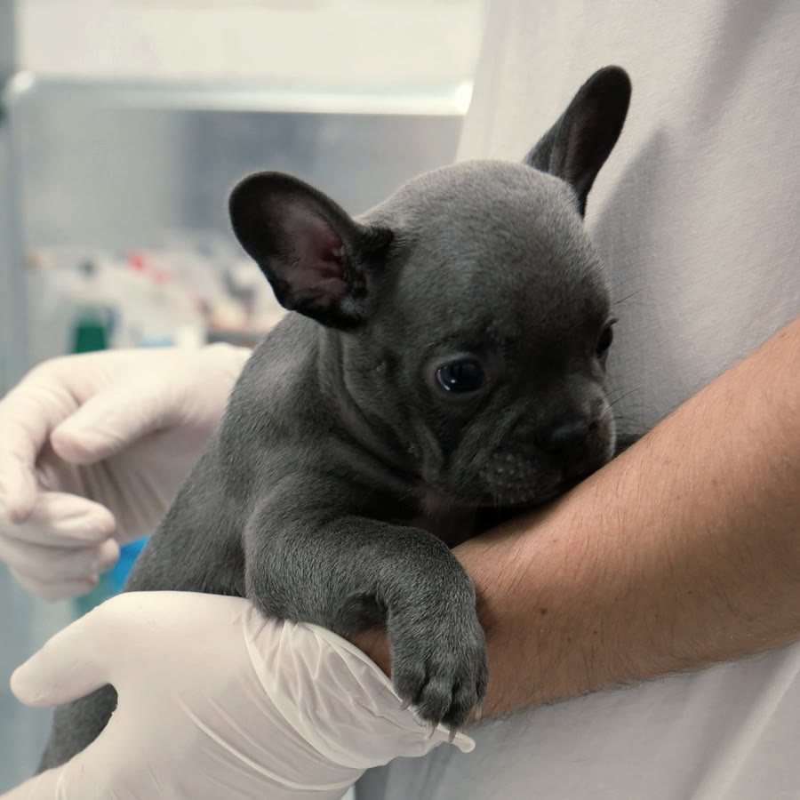

Без переноски и дороги
Врач приезжает по вашему адресу в Полоцке, Новополоцке и окрестностях.
врач приедет сам
Ветеринар на дом в Полоцке и Новополоцке. Роман Чертопалов осмотрит кошку или собаку в привычной обстановке — без переноски, дороги и очереди.


Врач приезжает по вашему адресу в Полоцке, Новополоцке и окрестностях.
Спокойно и бережно — с вниманием к характеру и самочувствию питомца.
Обоснованные назначения: что делаем и зачем это нужно.

знакомьтесь
Помогает понять, какая помощь нужна питомцу, и объясняет, что делать дальше. Приезжает на дом и консультирует онлайн — с вниманием к животному и вашим вопросам.
Помощь кошкам и собакам. Нужную помощь и условия выезда согласуем перед записью.
Осмотр питомца на дому, обсуждение его состояния и дальнейших действий.
цена уточняетсяПрофилактические прививки кошкам и собакам. Условия проведения уточняются заранее.
цена уточняетсяЗабор биоматериала на дому. Перечень исследований и подготовку согласуем перед выездом.
цена уточняетсяНазначенные ветеринаром процедуры и уход. Возможность выполнения дома обсуждается отдельно.
цена уточняетсяРасскажите, что беспокоит питомца, и покажите назначения или результаты обследований. Обсудим следующие шаги.
онлайнне знаете, что нужно?
Расскажите, что его беспокоит, — подскажем, подходит ли выезд или лучше начать онлайн.
Назовите город и адрес, возраст животного и причину обращения.
Уточним возможность помощи на дому, время визита и предполагаемую стоимость.
Осмотрит питомца, проведёт согласованные процедуры и объяснит дальнейшие действия.
к приезду врача:
честно о формате
Возможности домашнего приёма ограничены: некоторые исследования и лечение требуют оборудования клиники. Перед записью обсудим, подходит ли выезд для вашей ситуации.
куда приедем
Полоцкий район и ближайшие населённые пункты. Более дальние адреса, возможность визита и стоимость дороги согласуем заранее.
мы на связи
Назовите город и адрес, возраст животного и причину обращения.